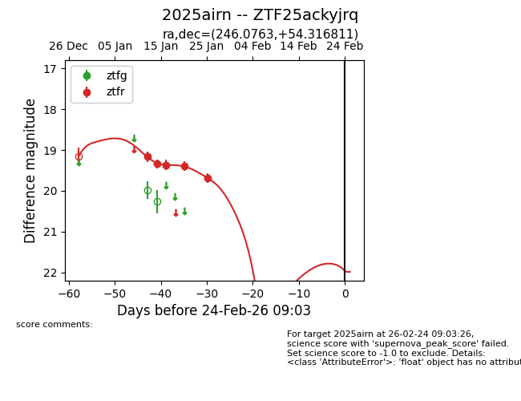
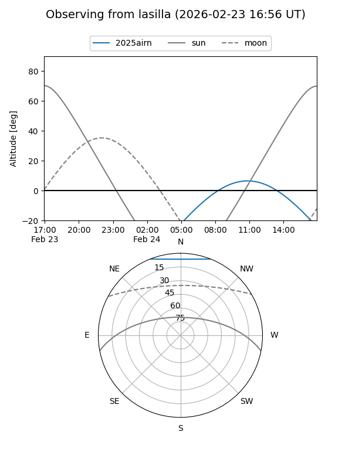
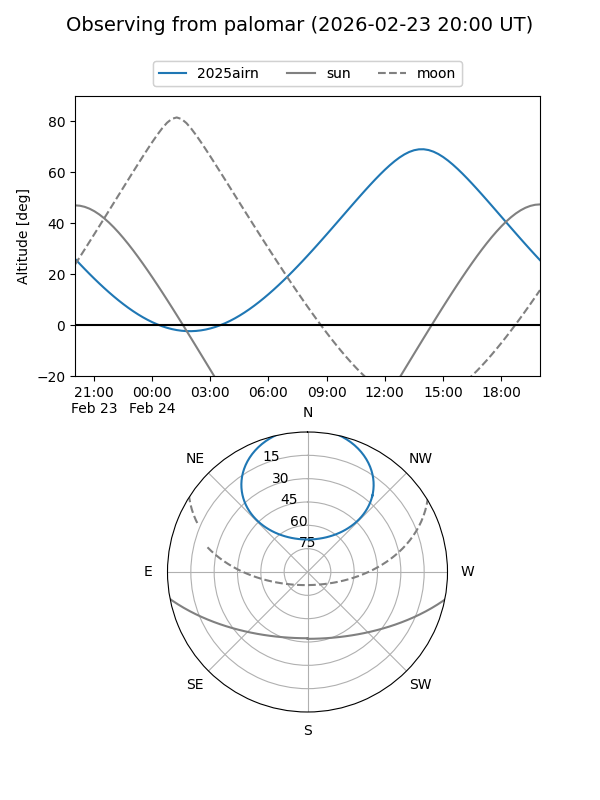
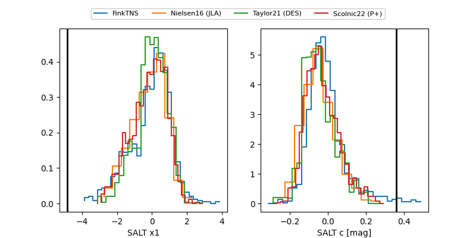

2025airn
Target 2025airn at 2026-01-16 13:16
Aliases and brokers:
FINK: link
Lasair: link
ALeRCE: link
TNS: link
YSE: link
alt names
ZTF25ackyjrq (ztf,fink_ztf)
2025airn (tns,yse)
Coordinates:
equatorial (ra, dec) = 246.0763,+54.31681
equatorial (HMS+DMS) = 16:24:18.32,+54:19:00.52
galactic (l, b) = (83.2780,+42.93948)
Flags:
Photometry:
last ztfr=19.37
3 ztfr detections
Lightcurve

Visibility


Additional plots
